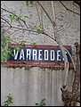

Divers éléments de signalisation verticale
Mouroux 1
Mouroux 2
Rozay-en-Brie RN 4
Rozazy-en-Brie VO 8

Varreddes
cliquez sur les vignettes pour les agrandir
Retour
Generated with Arles Image Web Page Creator